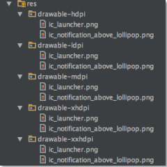
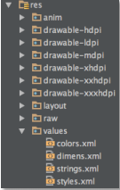
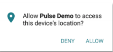

Integration - Android Studio
Initialise Pulse library
Initialise Pulse library in the main Application class of your project. For e.g.:
Private PulseSDK mPulseSDK;
mPulseSDK = new PulseSDK(this);
Please refer to the demo app’s DemoAppApplication.java file to review the examples in this document.
Initialise SDK with your app key
Initialise the SDK using setConfig method with your app key:
mPulseSDK.setConfig(“key”,“your-app-key-here”);
Set the package name
If the package name of Application does not match the package name in AndroidManifest.xml, set the package name to ensure app references can be correctly read by the SDK:
mPulseSDK.setPackageName(mPackageName);
Set the SDK mode
Pulse runs a service to ensure that interactions can be triggered even when the app is in the background or inactive (not in memory). Based on project requirements, Pulse service can be started in different modes to selectively trigger interactions:
- To interact in all modes (foreground, background and inactive):
mPulseSDK.startService(true, true, true);
- To interact in foreground and background mode only:
mPulseSDK.startService(true, true, false);
- To interact in foreground only:
mPulseSDK.startService(true, false, false);
- To interact in background only:
mPulseSDK.startService(false, true, false);
By default, the SDK would use ANDROID_ID and hardware SERIAL number to create a session identifier for the app install: https://developer.android.com/reference/android/provider/Settings.Secure.html#ANDROID_ID https://developer.android.com/reference/android/os/Build.html#SERIAL
If you want to use another identifier, use setSessionID method before starting the service:
mPulseSDK.setSessionID("4083EE6AF29F4DEDBE5729EB85DD16C8");
mPulseSDK.startService(true, true, true);
Please refer to the demo app’s DemoAppApplication.java file to review these Pulse service configurations.
Stop and restart the SDK
Pulse interactions can be “forced” stopped, if required. This feature is used to implement custom user controls within the app to allow user’s to opt-in/out of using Pulse powered features. Note that Pulse services operate asynchronously, thus depending on the device it will take a few seconds to shut it down or restart.
- To stop the PulseSDK Service:
PulseSDK.stopService(mApplication);
- After stopping, to restart PulseSDK Service:
PulseSDK.resetService(mApplication);
PulseSDK mPulseSDK = new PulseSDK (mApplication);
PulseSDK.startService(true, true, true);
In-app interactions within a web view
When the app is open (active), in-app beacon/geofence interactions are rendered within a web view. This feature is only available when setActivityStatus method is called within the app’s activity lifecycle functions.
For e.g.:
import com.pulse.sdk.global.PulseSDK;
@Override
protected void onResume() {
super.onResume();
PulseSDK.setActivityStatus(this,false,false);
}
@Override
protected void onPause() {
PulseSDK.setActivityStatus(this,true,false);
super.onPause();
}
@Override
protected void onDestroy() {
PulseSDK.setActivityStatus(this,false,true);
super.onDestroy();
}
Please refer to the demo app’s DemoActivity.java file.
Android Lollipop and above
Notification icon
Ensure the name of notification icon file (PNG) is “ic_notification_above_lollipop.png” for target device that has API 21 (Lollipop) and above. This app icon will appear in notifications. Refer to the Android guide for guidance on notification icon design: https://developer.android.com/design/patterns/notifications.html
-
Please refer to the demo app’s res folder for an example.

-
You may also wish to customize the background color of the notification icon by modifying colors.xml file in pulse-sdk-library project.

For e.g.
java <?xml version="1.0" encoding="utf-8"?> <resources> <color name="notification_icon_bg_color_above_lollipop">#ffff4b2f</color> </resources>
Android Marshmallow and above
New permission standard
If app’s target build is API 23 or higher, then the developer needs to account for new permission standard introduced in Android 6.0: https://developer.android.com/guide/topics/security/permissions.html#normal-dangerous
-
Pulse SDK requires at least the Location permissions to operate its Geofence and beacon features. Thus, it is recommended that the app ask for the permission when it is opened for the first time.

-
As an example, below is a suggested approach to request the location permission in the launcher activity of the app. Refer to the demo app’s DemoActivity.java file to see this example:
//remove Toast messages in production
@Override
protected void onCreate(Bundle savedInstanceState) {
if (Build.VERSION.SDK_INT >= 23) {
PulsePermissions mPulsePermissions = new
PulsePermissions (this.getApplicationContext());
requestLocationPermission(mPulsePermissions.getPemissionStatusLocation());
}
}
private void requestLocationPermission(int mLocation) {
if (Build.VERSION.SDK_INT >= 23) {
if ((mLocation != PackageManager.PERMISSION_GRANTED)) {
boolean bLocation = ActivityCompat.shouldShowRequestPermissionRationale(this,Manifest.permission.ACCESS_FINE_LOCATION);
if (bLocation) {
Toast.makeText(this, "User denied Location Permission... Wait until user has changed Permission", Toast.LENGTH_LONG).show();
}else {
//Show location permission prompt to user
ActivityCompat.requestPermissions((Activity) this,
new String[]{Manifest.permission.ACCESS_FINE_LOCATION},
REQUEST_PERMISSION_LOCATION);
}
} else {
if((mLocation != PackageManager.PERMISSION_GRANTED)) {
boolean bLocation = ActivityCompat.shouldShowRequestPermissionRationale(this,Manifest.permission.ACCESS_FINE_LOCATION);
if (bLocation) {
Toast.makeText(this, "User disabled Location Permissions... Wait until user changes Permissions", Toast.LENGTH_LONG).show();
}
}
}
}
}
Clean the project and build with ProGuard
Clean the project (Project > Clean) and then Build(Project > Build Project). Please refer to both proguard-pulse.txt and project.properties files in Pulse demo app to build with ProGuard.